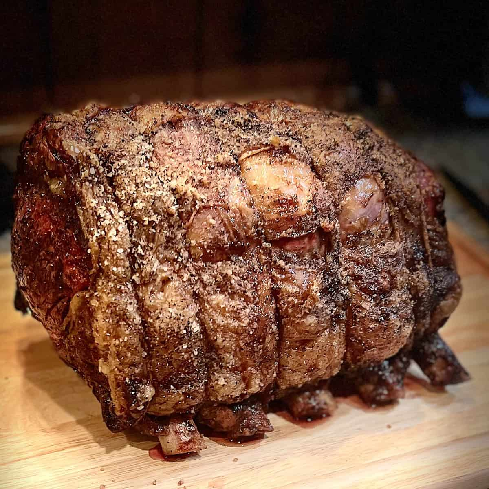

A frequent sight on holiday tables in the US, a standing rib roast is the sixth to twelfth rib section of the rib primal from a cow. It got its name after the fact that it can stand thanks to rib bones which enable it to roast in that position. The preparation typically starts with dry-aging the beef, which is totally optional and can take a few days to a few weeks, as that step ensures great flavor and tenderness.
Meal prep time : 3 hours 30 minutes
Servings : 12